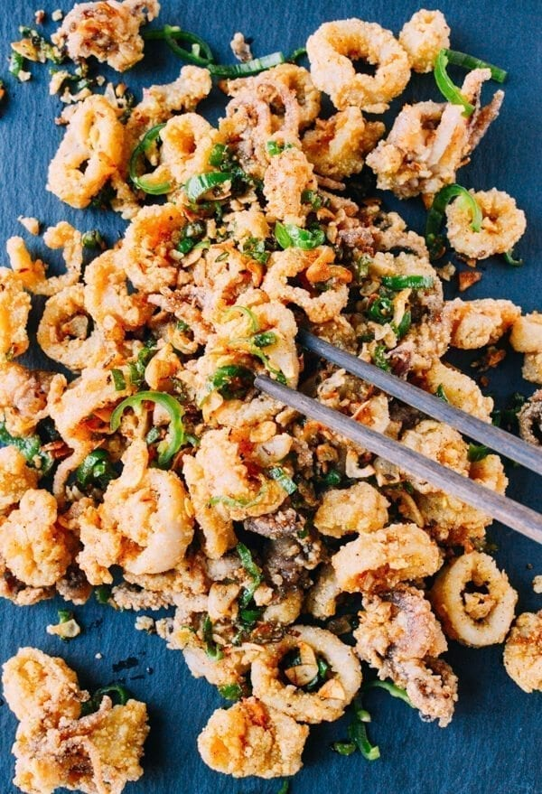

Salt and Pepper Squid

Description
Caught some fresh squid? Here's the best way to prepare it!
Ingredients
- Fresh squid tubes and tenticles
- 500ml neutral oil
- 2 tsp five spice
- 1/2 cup of whole milk
- 1 cup of plain flour
- 2 eggs
- salt and pepper to taste
Steps
- Heat the oil in a deep pan to 180*c
- Mix 5 spice, salt and pepper into the flour and put into a low walled tray
- Mix the eggs and milk until well combined
- Dry the squid completely, then dredge in the flour, followed by egg mix, followed by flour again
- Gently put dredged squid into the oil and cook until golden brown
- Dry on paper towel and immediately season with salt
- Serve immediately